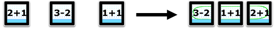

3 or more cubes
Ages 7 and up
You can make all kinds of puzzles with this kit:
- Sort letters to form a word:
- Sort sums from least to greatest:
- 
- Sort words to form a sentence:
How to create a game
- Click the Create Your Own button inside the Creativity Kit Template, or click Duplicate within one of your existing Creations.
- Navigate to your new puzzle in the My Games tab (hint: it will have "copy" in the name).
- Click Edit this Game.
- Change the title and instructions, and select the number of cubes you will use (most players use 3).
- Enter your puzzles, row by row. Imagine that each text field represents a cube. You can enter letters, words, numbers, and more.
- Delete rows you don't need or leave them blank and they will be skipped.
- Click Done Editing when you've finished adding your puzzles. You're ready to play!
Other editing options
- Click on the big title to edit it.
- Edit the instructions to provide a short message to the player.
- Click the menu next to "Number of Cubes" to match the number of Sifteo cubes players will need to play your game.
- Check the "Scored" box, if you'd like the game to display a score at the end.
- Check the "Time Limit" box, if you'd like to enter a time limit, in seconds.
- Check the "Shuffled" box, if you'd like your game to present the puzzles in a randomly shuffled order, instead of top to bottom.
How to play your game
When you press Play, the game will start playing on the cubes. Neighbor the Select cube to the Play cube to start. Then sort! When you're done, the game will let you know how you did.
Credits
Puzzle Design
Design and Programming
- Jared Hanson
- Chris March
- David Merrill
- Eric Miller
Art
Sound
Changes
- 1.0.4
- Updated the instructions.
- 1.0.3
- Added new music, and shortened the delay when skipping a puzzle.
- 1.0.2
- Fixed bugs and refined instructions.
- 1.0.1
- Fixed bugs and added refinements.
- 1.0.0
- Initial release.
Creativity Kit: Sorting, copyright © 2011, Sifteo Inc. All rights reserved.